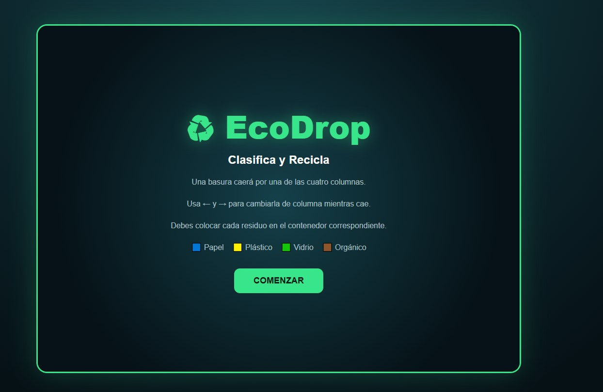
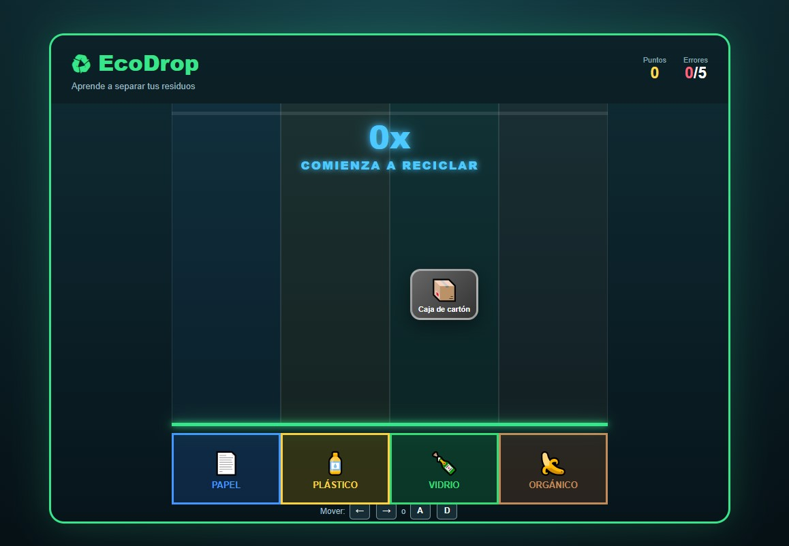
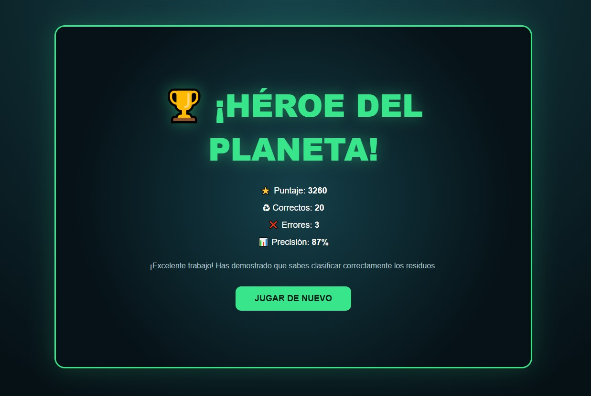

Clasifica, recicla y conviértete en un héroe del planeta
EcoDrop: Clasifica y Recicla es un videojuego educativo en el que diferentes residuos caen verticalmente por una zona dividida en cuatro columnas.
El jugador debe mover cada residuo hacia el contenedor correcto antes de que llegue a la zona de clasificación.
El proyecto busca enseñar a identificar y separar correctamente residuos de papel, plástico, vidrio y material orgánico mediante una experiencia rápida, visual e interactiva.
La idea principal de EcoDrop es convertir el aprendizaje sobre reciclaje en una actividad basada en reflejos y toma rápida de decisiones.
En lugar de presentar únicamente preguntas teóricas, el videojuego permite aprender mediante la clasificación directa de diferentes objetos.
Cuando el jugador comete un error, el juego indica cuál era el contenedor correcto para ayudarle a reconocer y recordar la categoría del residuo.
El objetivo es clasificar correctamente 20 residuos antes de cometer 5 errores.
Para conseguirlo, el jugador debe:
La zona de juego está dividida en cuatro columnas: Papel, Plástico, Vidrio y Orgánico.
Un residuo aparece en la parte superior y comienza a caer. Mientras desciende, el jugador puede moverlo horizontalmente entre las cuatro columnas.
Cuando el residuo llega a la parte inferior, el juego comprueba si se encuentra en el contenedor adecuado.
Una clasificación correcta aumenta la puntuación y el combo. Una clasificación incorrecta aumenta el contador de errores y reiniza el combo.
Mover el residuo una columna a la izquierda
Mover el residuo una columna a la derecha
Nota: El residuo no puede salir de los límites de las cuatro columnas.
Caja de cartón, periódico, hoja de papel.
Botella plástica, bolsa plástica, envase plástico.
Botella de vidrio, frasco de vidrio.
Cáscara de plátano, cáscara de manzana, restos de comida.
El juego incluye puntuación acumulada, número de errores, progreso y un sistema de combos por respuestas correctas consecutivas.
Puntos obtenidos = 100 + combo × 10
Niveles de combo:
3x: ¡Racha!5x: ¡Reciclador!8x: ¡Experto verde!12x: ¡Maestro del reciclaje!16x: ¡Leyenda Eco!20x: ¡Héroe del planeta!Dificultad progresiva: La velocidad de caída aumenta después de cada clasificación correcta.
Condición de victoria: Clasificar correctamente 20 residuos (Pantalla: ¡HÉROE DEL PLANETA!).
Condición de derrota: Alcanzar 5 errores.

Pantalla inicial

Momento de gameplay

Pantalla final
Apoyo de IA: Utilizada como herramienta para estructurar el prototipo inicial mediante prompts detallados definiendo la mecánica de caída, los combos y las reglas educativas.
Aporte personal: Definición de requisitos, revisión del funcionamiento de los controles, pruebas de sistemas de puntuación, organización en GitHub y redacción de la documentación.
Aprendizajes: Diseño de videojuegos educativos, implementación de bucles de juego, control de eventos en JavaScript y gestión de dificultad progresiva.
Mejoras futuras: Controles táctiles para móviles, efectos de sonido, nuevas categorías de residuos, almacenamiento local de récords y diseño de niveles adicionales.